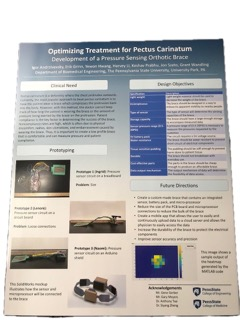

Breakdown of seat number distribution on top streets by restaraunt type, done for a data analysis project. Average number of seats by restaraunt type, done for a data analysis project. Summary report of capstone project for BME 450 at Penn State, for the treatment of Pectus Carinatum.

Poster summarizing highlights and process of the capstone project.